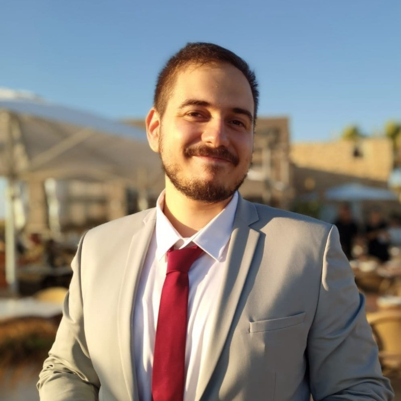

Technion Comp. Engineering student (2019 - Present, est grad. 2023)
Android and Web applications development bootcamp
Constant online learning from courses, blogs and papers
2011 - 2014 - High School
Full High School Diploma with specialization in computers and physics
Studied in the "Ort-Technion" program, enjoying special access to
Technion institutions and classes
2015 - 2018 - Military Service
6 Months in Pilot Academy, including Ben Gurion Uni. classes
2 and 1/2 Years as Hydraulics Technician
Favorite Projects:
Multiple Drone Delivery Project using Vision and Planning algorithms
Graph Neural Networks Rewiring using RL
Oversquashing is a phenomenon in graph neural networks where information from too many nodes is condensed to a single vector, harming the network’s predictions.
The phenomenon is widespread in large networks where over the multiple layers of the GNN information from an exponential amount of nodes is condensed to the constant sized node embedding. It is shown that even simple solutions such as making the last layer of the GNN fully adjacent (adding all possible edges in the graph) improves task accuracy by up to 40%.
The goal of this project is to find and compare methods of graph rewiring to improve learning. Our algorithms will learn how to modify edges in such a way that will maximize performance across several tasks.
Our code is available here: Github.com/vYahav/GraphRewiring
Yaniv Hassidof

Look for Me!
054-8306800
With great passion for computers, I've been tinkering with machines since I was litte.
A fun, social and a very hard working individual, I take every
task with the outmost seriousness.


 054-8306800
054-8306800